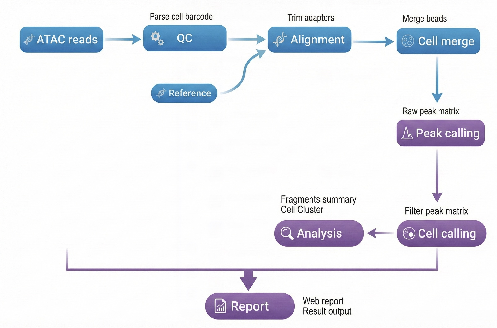

概述 ¶
本文档详细介绍了使用 dnbc4tools 进行单细胞 ATAC 测序数据分析的完整流程。
工作流程：原始数据 → 质量控制 → 比对 → 磁珠合并 → Peak调用 → 细胞识别 → 降维聚类 → 分析报告

使用说明：$dnbc4tools 代表可执行程序路径，需替换为您的实际安装路径。本文示例使用换行符 \ 分隔命令以提高可读性，实际分析时可写为单行。
文件准备 ¶
分析需要FASTQ文件：
| 文件类型 | 说明 |
|---|---|
| ATAC文库 | 包含cell barcode和染色质开放区域信息的测序数据 |
注意：确保FASTQ文件质量良好，并记录好文件路径，用于后续分析。
参考数据库 ¶
文件要求¶
| 文件类型 | 格式 | 说明 |
|---|---|---|
| 基因组文件 | FASTA | 包含特定物种的完整基因组序列，包括染色体、线粒体及其他遗传信息，通常为主装配版本。这些文件为基因组分析和比对提供基础数据。 |
| 注释文件 | GTF | 包含基因组中基因、转录本、外显子及其他功能区域的详细信息。该文件标识基因的位置、类型及其相关属性。 |
推荐数据来源：优先使用 Ensembl 数据库 提供的文件。Ensembl 的 GTF 文件包含可选标签，便于通过 dnbc4tools tools mkgtf 进行过滤。
GTF文件要求：
- 必须包含gene或transcript类型的注释
- 不支持GFF文件格式
- 基因组文件与注释文件需对应
GTF文件处理（可选）¶
有关GTF文件过滤的详细信息，请参考scRNA分析流程。
构建参考数据库¶
在运行dnbc4tools atac run分析之前，我们需要优先构建参考数据库。此步骤需要注释文件(GTF)和参考基因组(FASTA)来构建索引文件，用于测序reads的比对和统计分析。
$dnbc4tools atac mkref \
--fasta genome.fa \
--ingtf genes.gtf \
--species Mus_musculus
输出结果：
成功运行后，将在指定位置创建参考数据库目录，包含以下文件结构：
/database/scATAC/Mus_musculus
├── fasta
│ ├── genome.fa
│ ├── genome.fa.fai
│ ├── genome.index
│ └── genome.index.log
├── genes
│ └── genes.gtf
├── ref.json
└── regions
├── chrom.sizes
├── promoter.bed
└── tss.bed
其中ref.json文件中记录数据库的主要信息：
{
"species": "Mus_musculus",
"input_fasta_files": [
"genome.fa"
],
"input_gtf_files": [
"genes.gtf"
],
"genome": "fasta/genome.fa",
"index": "fasta/genome.index",
"gtf": "genes/genes.gtf",
"chrmt": "chrM",
"chloroplast": "None",
"chromeSize": "regions/chrom.sizes",
"tss": "regions/tss.bed",
"promoter": "regions/promoter.bed",
"version": "3.1",
"blacklist": "None",
"genomesize": "mm"
}
注意：构建参考数据库可能需要较长时间，取决于基因组大小和计算机性能。软件主分析流程兼容旧版本数据库。
运行时打印信息，以下是一个示例：
2026-04-03 16:32:43 Creating new reference folder at /database/scATAC/Homo_sapiens
...done
2026-04-03 16:32:43 Writing genome FASTA file into reference folder...
...done
2026-04-03 16:33:33 Indexing genome FASTA file...
...done
2026-04-03 16:33:44 Writing genes GTF file into reference folder...
...done
2026-04-03 16:33:59 Extracting TSS and promoter regions from GTF file...
...done
2026-04-03 16:34:03 Generating Chromap genome index...
...done
2026-04-03 16:42:28 Writing reference JSON file...
...done
2026-04-03 16:42:28 ATAC reference building finished.
主分析流程 ¶
多样本批处理（可选）¶
为了简化每个样本单独生成主分析流程，可以使用配置文件来生成一个包含多个样本的主流程 shell 脚本。以下是一个示例步骤或脚本模板：
$dnbc4tools atac multi \
--list sample.tsv \
--genomeDir /database/scATAC/Mus_musculus \
--threads 10
其中 sample.tsv 文件使用制表符 (\t) 分隔，包含两列：
| 列 | 内容 |
|---|---|
| 1 | 样本名称 |
| 2 | 文库测序数据 |
注意：
多个fastq文件以逗号（,）分隔，
R1和R2文件以分号（;）分隔
sample1 /data/sample1_R1.fq.gz;/data/sample1_R2.fq.gz
sample2 /data/sample2_R1.fq.gz;/data/sample2_R2.fq.gz
sample3 /data/sample3_1_R1.fq.gz,/data/sample3_2_R1.fq.gz;/data/sample3_1_R2.fq.gz,/data/sample3_2_R2.fq.gz
运行完成后输出：
sample1.sh
sample2.sh
sample3.sh
其中文件 sample1.sh 如下：
$cat sample1.sh
/opt/software/dnbc4tools3.1/dnbc4tools atac run --name sample1 --fastq1 /data/sample1_R1.fq.gz --fastq2 /data/sample1_R2.fq.gz --genomeDir /database/scATAC/Mus_musculus --threads 10
执行第四步进行主流程分析。
单样本分析¶
ATAC 主分析流程使用单个样本单细胞 ATAC 文库测序数据，经过过滤和比对生成所有磁珠的 fragments 文件。合并磁珠并执行 peak 调用分析，利用 peaks 区域的片段信息进行细胞识别。随后进行细胞过滤、降维和聚类，最终整合各步骤结果生成 HTML 网页报告并输出分析结果。
支持两种输入方式：
方式1：目录方式（推荐）
$dnbc4tools atac run \
--name sample \
--fastqs /data \
--genomeDir /database/scATAC/Mus_musculus \
--threads 10
目录结构示例：
/data/
├── sample_R1.fastq.gz
└── sample_R2.fastq.gz
方式2：单独参数方式
$dnbc4tools atac run \
--name sample \
--fastq1 /data/sample_R1.fastq.gz \
--fastq2 /data/sample_R2.fastq.gz \
--genomeDir /database/scATAC/Mus_musculus \
--threads 10
在对试剂版本和暗反应自动检测后，软件开始运行分析，以下是一个示例：
──────────────────────────── Parsed FASTQ Inputs — 2025-11-12 15:05:39 ─────────────────────────────
┌───────┬──────────────────────────────────────────────────────────────────────────────────────────┐
│ Type │ Path │
├───────┼──────────────────────────────────────────────────────────────────────────────────────────┤
│ Read1 │ /data/sample_R1.fastq.gz │
│ Read2 │ /data/sample_R2.fastq.gz │
└───────┴──────────────────────────────────────────────────────────────────────────────────────────┘
────────────────────────────────────────────────────────────────────────────────────────────────────
──────────────────────────── Chemistry Detection — 2025-11-12 15:05:49 ─────────────────────────────
┌─────────────────────────────────┬────────────────────────────────────────────────────────────────┐
│ Type │ Result │
├─────────────────────────────────┼────────────────────────────────────────────────────────────────┤
│ Read1 │ darkreaction │
│ Read2 │ darkreaction │
└─────────────────────────────────┴────────────────────────────────────────────────────────────────┘
────────────────────────────────────────────────────────────────────────────────────────────────────
2025-11-12 15:05:49 Performing raw data quality control and alignment...
...done
2025-11-12 15:24:56 Calculating bead similarity and merging beads within droplets...
...done
2025-11-12 15:28:00 Processing fragments for peak calling...
...done
2025-11-12 15:31:22 Generating raw peak count matrix...
...done
2025-11-12 15:38:18 Generating cell-filtered peak count matrix...
...done
2025-11-12 15:43:23 Performing dimensionality reduction and clustering...
...done
2025-11-12 15:50:03 Generating analysis report and summary statistics...
...done
2025-11-12 15:50:19 Analysis Finished. Elapsed Time: 0:44:30
当出现 Analysis Finished 消息时，表示分析已成功完成。
结果解析 ¶
分析完成后，将生成结果输出目录outs，logs日志目录。
.
├── *_scATAC_report.html
├── filter_peak_matrix/
│ ├── barcodes.tsv.gz
│ ├── matrix.mtx.gz
│ └── peaks.bed.gz
├── fragments.tsv.gz
├── fragments.tsv.gz.tbi
├── metrics_summary.xls
├── raw_peak_matrix/
│ ├── barcodes.tsv.gz
│ ├── matrix.mtx.gz
│ └── peaks.bed.gz
└── singlecell.csv
相关文档¶
常见问题¶
本节正在更新中。
反馈与支持
本文档持续更新中，如发现内容错误或需要补充的信息，欢迎反馈。
文档版本： 3.1 | 最后更新： 2026年4月